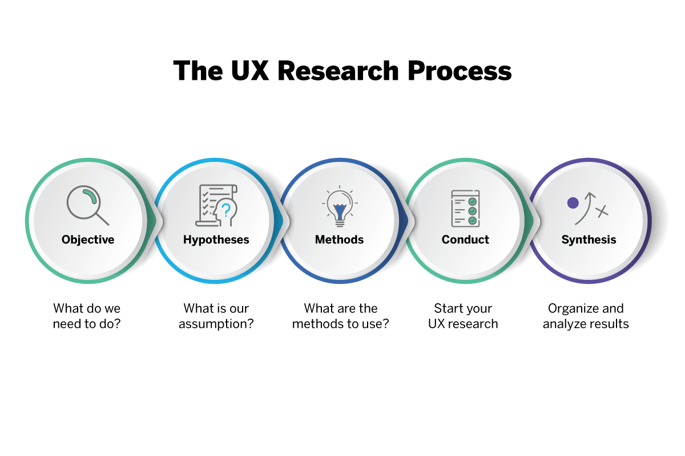
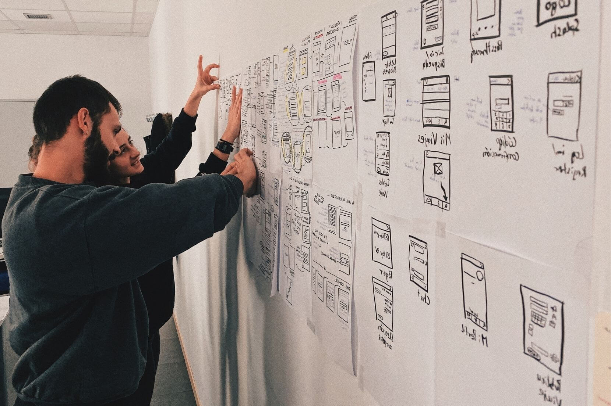

Optimising UX Research: Strategic Recommendations
Author:
12th February 2024
User experience (UX) research is an essential component of any successful digital strategy. It involves gathering insights into user behaviours, preferences, and pain points to create products and services that meet their needs effectively. By conducting comprehensive UX research, businesses can gain valuable data that informs decision-making processes and drives innovation.

UX research is an essential component of the design process, providing invaluable insights into user behaviors and preferences. By conducting thorough research, designers can create products and services that meet the needs and expectations of their target audience.
User experience (UX) research is an essential component of any successful digital strategy. It involves gathering insights into user behaviours, preferences, and pain points to create products and services that meet their needs effectively. By conducting comprehensive UX research, businesses can gain valuable data that informs decision-making processes and drives innovation.
When it comes to UX research, selecting the most appropriate methods is crucial for obtaining relevant and actionable insights. Methods such as surveys, interviews, usability testing, and analytics analysis can provide valuable data on user interactions and experiences. By combining both quantitative and qualitative approaches, businesses can gain a comprehensive understanding of user needs and preferences.
Before embarking on a UX research project, it is essential to define the research steps:
- Set Clear Objectives
- The Hypotheses
- Engage with Real Users
- Utilise Data Analysis Tools
- Analyse Results
- Iterate and Improve Based on Feedback
UX research is a critical component of creating user-centric digital experiences. By following strategic recommendations such as choosing the right research methods, setting clear objectives, engaging with real users, utilising data analysis tools, and iterating based on feedback, businesses can enhance the overall user experience and drive success in the digital landscape.
Real-World Examples
To truly grasp the impact of UX research, let's delve into some real-world examples that showcase its significance in shaping user-centric design.
Example 1: Improving E-Commerce Conversion Rates
Imagine an e-commerce website struggling to convert visitors into customers. Through UX research, the design team conducts user interviews and usability tests to identify pain points in the checkout process. By implementing user-friendly changes based on research findings, such as streamlining the checkout flow and adding clear call-to-action buttons, the website witnesses a significant increase in conversion rates.
Example 2: Enhancing Mobile App Usability
In another scenario, a mobile app receives negative feedback regarding its complicated navigation structure. Through UX research methods like card sorting and user journey mapping, the design team uncovers the root cause of user confusion. By simplifying the app's navigation and restructuring the information architecture based on research insights, user engagement and satisfaction levels soar.
Leveraging UX Research for Success
These examples illustrate how UX research serves as a compass that guides design decisions towards user satisfaction and business success. By embracing real-world examples and integrating user feedback into the design process, organisations can create products and services that resonate with their target audience.